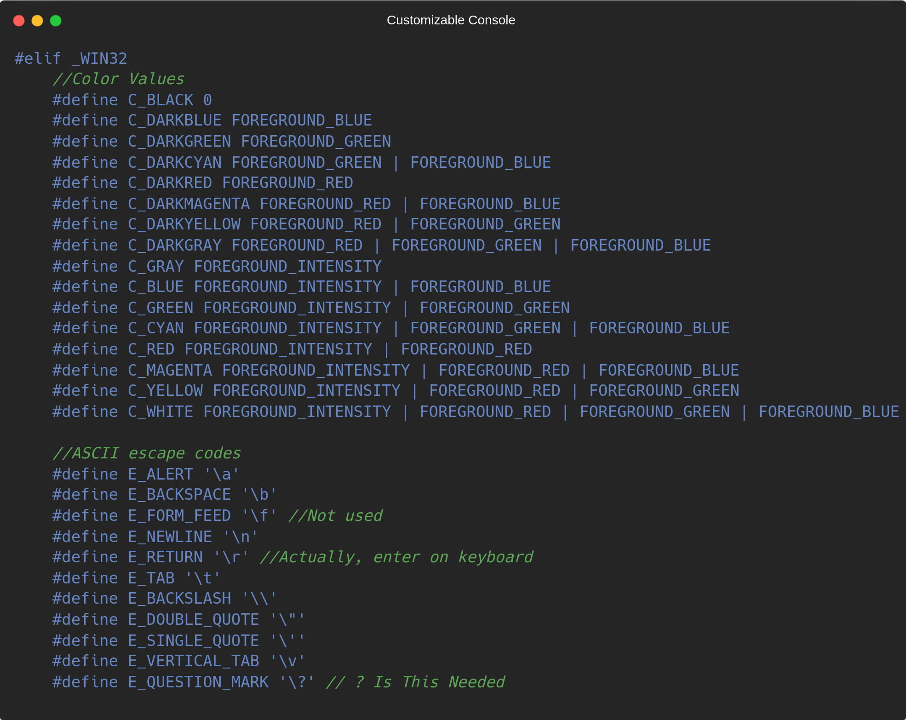

Customizable Console - Documentation
What is Windows?
Microsoft Windows is an operating system developed by Microsoft Corporation. It was first released in 1985 and has since become one of the most widely used operating systems in the world.
Windows is utilized across various sectors including business, home computing, and gaming. It provides a user-friendly interface and a wide range of software applications for different purposes. Windows is particularly popular among general users and software developers alike. Our library is fully compatible and functional within the Windows environment, allowing developers to create and run their applications seamlessly.
In this section of documentation, we'll look at pre-processor defines for our library on windows platform. We defined our attributes and properties on the beginning of code. Our attributes and properties are mostly used as a parameter or an argument to other functions included in our library. If you don't know what pre-processor is, it's a set of instructions for compiler to understand before compiling the code.
Now, before looking at definitions, let's first look at what WIN32 API is. WIN32 is an API (Stands for "Application Programming Interface"). Yes, API is a set of instructions where two or more computers communicate with each other, of course when using languages like C/C++ or any C-Like language. WIN32 API is a library style API for developers to make windows-special apps. Of course nowadays this API is not being used because of it's complexity. And Microsoft changed to another framework called .NET. But in this project we used only a few functions and attributes from original WIN32.
Now, we can take a look at our definitions.

You don't have to learn all of these values, writing their name in code is enough, so these will save your time a lot.
Windows Functions